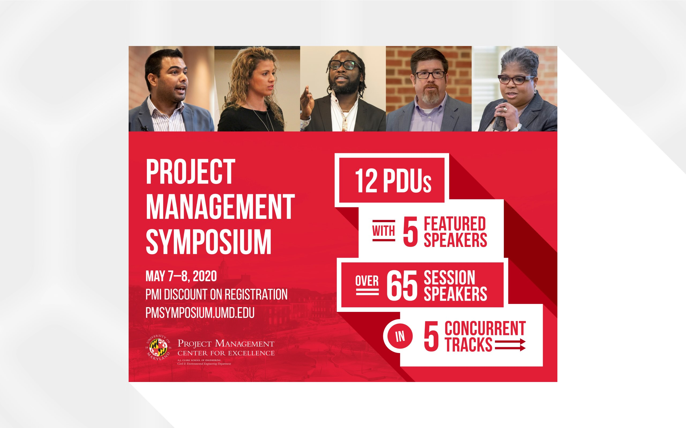
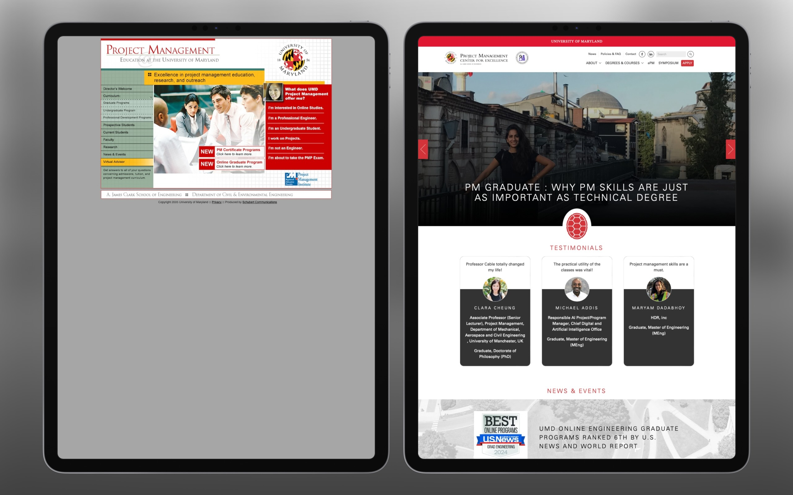
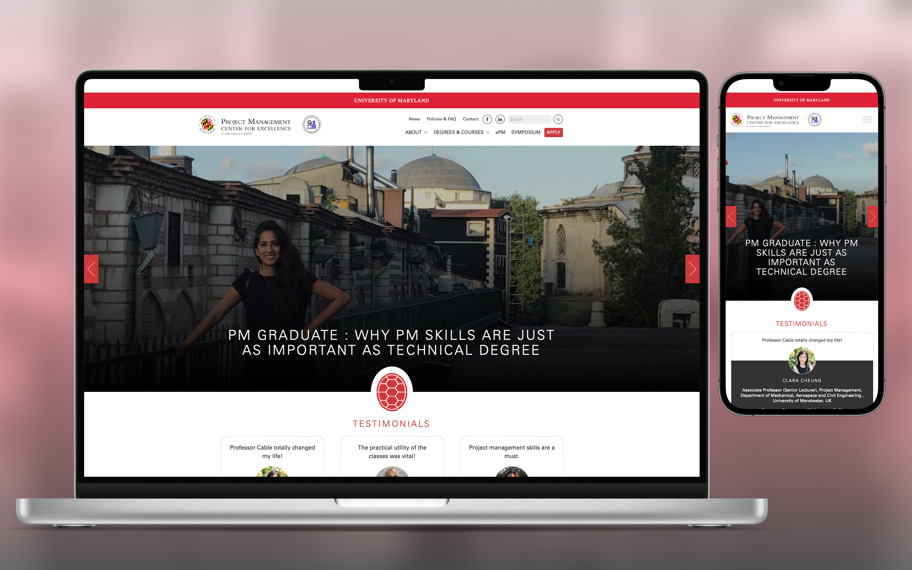
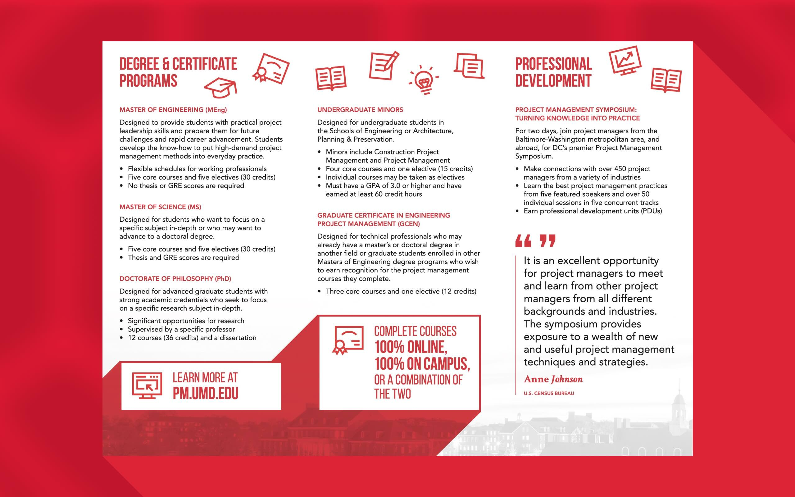
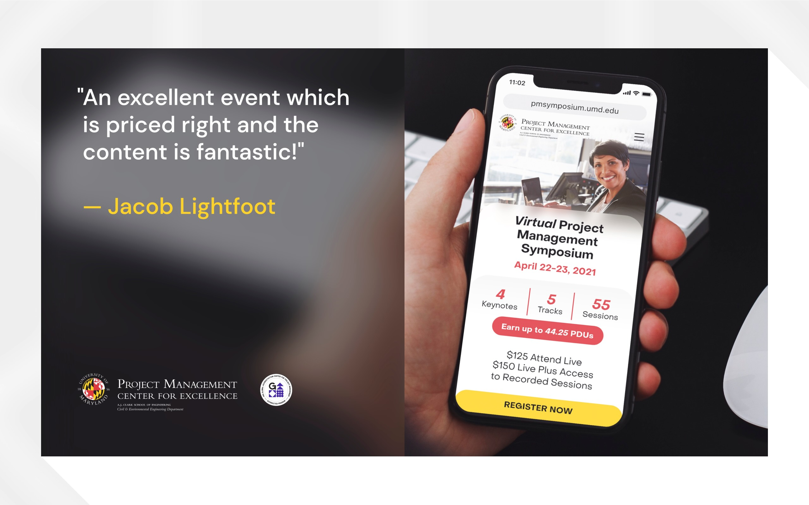
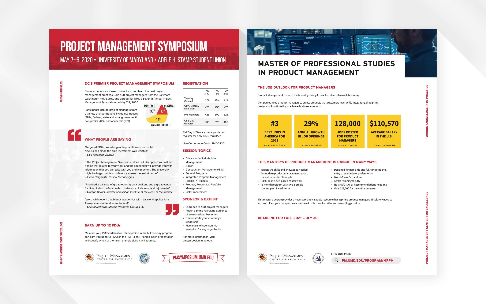
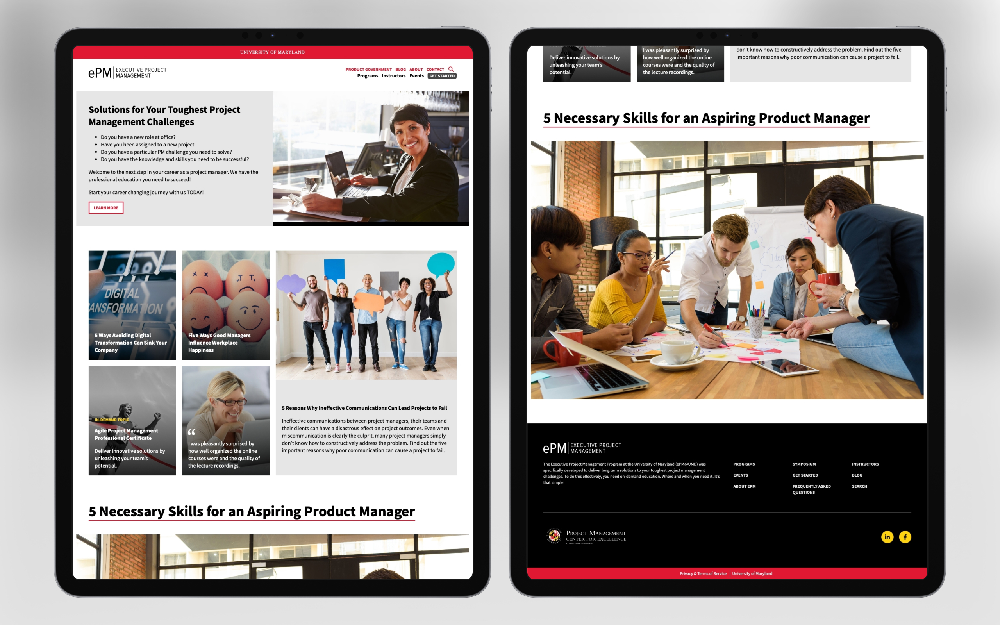

Brand and website revision for the Project Management Center for Excellence
When I began as a designer at University of Maryland's business school, the major challenge faced was a lack of consistency across the school's various design outlets. The school's website, degree programs, event brochures, and other print deliverables all had different visual directions, creating dissonance and confusion for their audience.
Our first priority was to create a single shared design language that all material would draw from going forward. Leadership wanted to maintain a certain level of individuality between each of the school's design outlets (event promos would still be distinct from material advertising degrees, for example) but now they would all appear to be fruit from a singular tree.
- Details
- Client: University of Maryland
- Studio: In-house design team

The revised art direction, as shown by a promotional graphic for the Project Management Symposium

Old and new Project Management Center websites side by side

New website detailed look

New degree brochure illustrating the revised art direction

An ad for a virtual event

Revised stationery templates

New Executive Project Management website